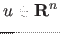
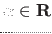
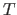
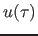
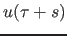
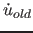

Consider the following differential equation
with
 and
. A periodic solution with period  satisfies the following system
For simplicity the period is treated as a parameter resulting in the system
If  is its solution then the shifted solution  is also a solution to (46) for any value of . To select one solution, a phase condition is added to the system. The complete BVP (boundary value problem) is
where  is the derivative of a previous solution. A limit cycle is a closed phase orbit corresponding to this periodic solution.